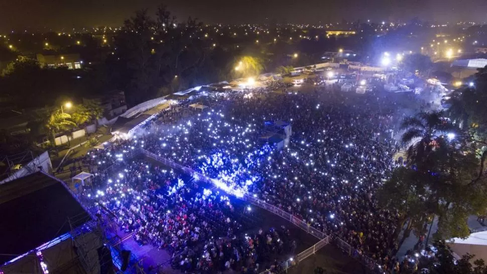

El Festival Monteros de la Patria nació en 1965 por iniciativa de un grupo de vecinos que, luego de participar del festival de Cosquín, se entusiasmaron con organizar un espectáculo similar con el fin de dar relevancia a la ciudad. Hoy el encuentro es uno de los más destacados del NOA. Los artistas más representativos del folclore nacional integran la cartelera de la 53a edición del Festival Nacional Monteros de la Patria, Fortaleza del Folcklore, que comienza hoy en esa ciudad.
MONTEROS DE LA PATRIA FORTALEZA DEL FOLCKLORE

Entre los más aclamados por el público figuran además Luciano Pereyra, Los Tekis y el Oficial Gordillo, en la apertura de hoy. Mañana actuarán El Chaqueño Palavecino, Raly Barrionuevo y Guitarreros. Para el sábado fueron anunciados Sergio Galleguillo y Los Manseros Santiagueños. El domingo, jornada de cierre, desfilarán Soledad, Los Huayras, Mario Alvarez Quiroga y Néstor Garnica. Entre los otros folcloristas que deleitarán con su música las noches de Monteros aparecen Los Mayhas, Los Cachis, Nueva Trova, Claudio Sosa, Emilio Morales, Coqui Sosa, Lautaro Urueña y Franco Luciani. La animación marcará también un hecho relevante: estará a cargo de Julio “Cacique” di Palma, de 85 años.